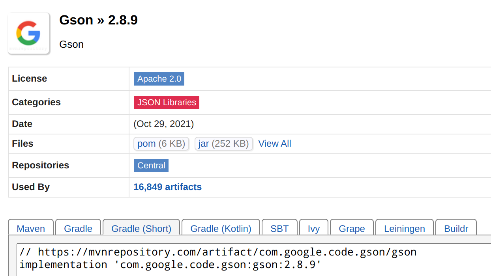

Gradle
Gradle is an open-source build automation tool focused on flexibility and performance.
Fundamentally, all build systems have a straightforward purpose: they transform the source code written by engineers into executable binaries that can be read by machines. For years, builds had the simple requirements of compiling and packaging soft- ware. But the landscape of modern software development has changed, and so have the needs for build automation.
It is highly recommended reading the Gradle User Manual. In this book, we only focus on one of most important features of Gradle, dependency management.
Dependency management overview
There is a well-known saying in software engineering: Don't reinvent wheels. Nowadays, no one would create a software from scratch, and she must use some third libraries to complete her task without re-writing every line of code on her own. For example, when you want to connect to MySQL, you have to use the database driver as a dependency.
In Java, Maven and Gradle are widely used to help programmers to manage third libraries without manual workload. In this tutorial, we focus on Gradle. Gradle's dependencies are put inside dependencies. For example, in the build.gradle of a template Java EE project:
dependencies {
compileOnly('javax.servlet:javax.servlet-api:4.0.1')
testImplementation("org.junit.jupiter:junit-jupiter-api:${junitVersion}")
testRuntimeOnly("org.junit.jupiter:junit-jupiter-engine:${junitVersion}")
}
Clearly, your Java web project depends on servlet if JDK is compiling your source code. Here we are using the string notation to declare such dependency. Let's try to decouple the long string javax.servlet:javax.servlet-api:4.0.1, which contains three parts:
- Group name:
javax.servlet. Who develops it. - Artifact name:
javax.servlet-api. What its name is. - Version:
4.0.1. Which version it is.
Those three parts (coordinates) can identify a unique package, and then Gradle is able to download this package from remote server. By default, this remote server is maven central repository. Alternatively, you can also declare a dependency with map notation:
compileOnly group: 'javax.servlet', name: 'javax.servlet-api', version: '4.0.1'
So, what does compileOnly means? Well, compileOnly is one of the dependency scopes. As its name implies, this package is only required during compilation, but not runtime. This is because the container (e.g., Tomcat) will provide necessary dependencies for your web project during runtime. In daily programming, implementation and runtimeOnly are often used[1]. Compared with compileOnly, the main difference can be summarized:
compileOnly: put the dependency on the compile classpath onlyruntimeOnly: put the dependency on the runtime classpath onlyimplementation: put the dependency on both classpaths
Similarly, both testImplementation and testRuntimeOnly are scopes related with tests.
How to find the dependency
We recommend https://search.maven.org/ and https://mvnrepository.com/. Both websites support searching by group and/or artifact names. For example, if you would like to use Gson in you project to handle JSON, you could get the dependency after a quick searching:

By the way, in China mainland, there may be some network issues accessing maven central repository. If so, you can use the mirror site of AliYun by replacing repositories of build.gradle with the following:
repositories {
maven { url 'https://maven.aliyun.com/repository/public/' }
mavenLocal()
mavenCentral()
}
[1] provided is deprecated, while api is similar to, but different with implementation. But implementation is the most common in daily programming. See more at Gradle Implementation vs API configuration.